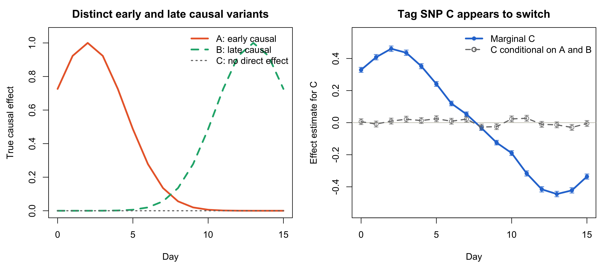

Last updated: 2026-07-31
Checks: 6 1
Knit directory: coderepo-local/
This reproducible R Markdown analysis was created with workflowr (version 1.7.2). The Checks tab describes the reproducibility checks that were applied when the results were created. The Past versions tab lists the development history.
The R Markdown is untracked by Git. To know which version of the R
Markdown file created these results, you’ll want to first commit it to
the Git repo. If you’re still working on the analysis, you can ignore
this warning. When you’re finished, you can run
wflow_publish to commit the R Markdown file and build the
HTML.
Great job! The global environment was empty. Objects defined in the global environment can affect the analysis in your R Markdown file in unknown ways. For reproduciblity it’s best to always run the code in an empty environment.
The command set.seed(20251109) was run prior to running
the code in the R Markdown file. Setting a seed ensures that any results
that rely on randomness, e.g. subsampling or permutations, are
reproducible.
Great job! Recording the operating system, R version, and package versions is critical for reproducibility.
Nice! There were no cached chunks for this analysis, so you can be confident that you successfully produced the results during this run.
Great job! Using relative paths to the files within your workflowr project makes it easier to run your code on other machines.
Great! You are using Git for version control. Tracking code development and connecting the code version to the results is critical for reproducibility.
The results in this page were generated with repository version 9fbd863. See the Past versions tab to see a history of the changes made to the R Markdown and HTML files.
Note that you need to be careful to ensure that all relevant files for
the analysis have been committed to Git prior to generating the results
(you can use wflow_publish or
wflow_git_commit). workflowr only checks the R Markdown
file, but you know if there are other scripts or data files that it
depends on. Below is the status of the Git repository when the results
were generated:
Ignored files:
Ignored: .DS_Store
Ignored: .Rhistory
Ignored: .Rproj.user/
Ignored: analysis/.DS_Store
Ignored: analysis/.Rhistory
Ignored: analysis/site_libs/
Ignored: code/.DS_Store
Ignored: code/.Rhistory
Ignored: data/appendixB/
Ignored: data/dynamic_eQTL_real/
Ignored: data/toy_example/
Ignored: output/dynamic_eQTL_real/
Ignored: output/pdf/
Ignored: output/revision_simulations/
Untracked files:
Untracked: Rplots.pdf
Untracked: analysis/revision_combined_spiky_genotype_simulation.rmd
Untracked: analysis/revision_functional_testing_simulation.rmd
Untracked: analysis/revision_genotype_level_simulation.rmd
Untracked: analysis/revision_internal_targeted_broad_calibration.rmd
Untracked: analysis/revision_ld_tagging_switch_example.rmd
Untracked: code/00_eQTLs_CL.R
Untracked: code/01_fash_CL.R
Untracked: code/01_fash_CL.sbatch
Untracked: code/09_penalty_sensitivity.R
Untracked: code/09_penalty_sensitivity.sbatch
Untracked: code/revision_simulations/
Untracked: fash_prior_comparison_order1_after.pdf
Untracked: fash_prior_comparison_order1_after.png
Untracked: fash_prior_comparison_order1_before.pdf
Untracked: fash_prior_comparison_order1_before.png
Untracked: fash_prior_comparison_order2_after.pdf
Untracked: fash_prior_comparison_order2_after.png
Untracked: fash_prior_comparison_order2_before.pdf
Untracked: fash_prior_comparison_order2_before.png
Unstaged changes:
Modified: .gitignore
Modified: analysis/dynamic_eQTL_real.rmd
Modified: analysis/index.Rmd
Modified: analysis/nonlinear_dynamic_eQTL_real.Rmd
Modified: code/README.md
Modified: output/toy_example/toy_example_11.pdf
Modified: output/toy_example/toy_example_12.pdf
Modified: output/toy_example/toy_example_21.pdf
Modified: output/toy_example/toy_example_22.pdf
Note that any generated files, e.g. HTML, png, CSS, etc., are not included in this status report because it is ok for generated content to have uncommitted changes.
There are no past versions. Publish this analysis with
wflow_publish() to start tracking its development.
Suppose the marginal effect estimated at a lead or tag SNP changes sign over time. Does this imply that one shared causal variant changes its direction of effect?
Not necessarily. A non-causal tag SNP can be correlated with distinct causal variants that are active at different times. If the signed linkage disequilibrium (LD) between the tag SNP and the two causal variants has opposite directions, the marginal effect at the tag SNP can appear to switch sign even though neither causal effect switches.
Let \(A\) and \(B\) be causal variants and let \(C\) be a non-causal tag SNP. At day \(t\), generate expression as
\[ Y(t) = \beta_A(t)G_A + \beta_B(t)G_B + \epsilon(t), \]
where \(\beta_A(t)\) is a positive early effect and \(\beta_B(t)\) is a positive late effect. Regressing \(Y(t)\) on \(G_C\) alone gives the population marginal coefficient
\[ \beta_C^{\mathrm{marg}}(t) = \frac{\operatorname{Cov}(G_C,G_A)}{\operatorname{Var}(G_C)}\beta_A(t) + \frac{\operatorname{Cov}(G_C,G_B)}{\operatorname{Var}(G_C)}\beta_B(t). \]
Thus, positive signed LD between \(C\) and \(A\) and negative signed LD between \(C\) and \(B\) can produce a positive marginal effect early and a negative marginal effect late. The sign of LD depends on allele alignment; here it is represented by the signed genotype correlation.
The simulation uses 10000 individuals to make the
population mechanism visually clear. It is a proof-of-possibility
example rather than a model of the sample size or uncertainty in the
iPSC study.
We generate two haplotypes per individual. Variants \(A\) and \(B\) are approximately independent. The allele probability for \(C\) is constructed so that \(C\) is positively correlated with \(A\) and negatively correlated with \(B\).
set.seed(20260731)
n <- 10000L
days <- 0:15
h_a <- rbinom(2L * n, size = 1L, prob = 0.5)
h_b <- rbinom(2L * n, size = 1L, prob = 0.5)
p_c <- 0.5 + 0.45 * (h_a - h_b)
h_c <- rbinom(2L * n, size = 1L, prob = p_c)
combine_haplotypes <- function(x) {
x[seq_len(n)] + x[n + seq_len(n)]
}
genotype <- data.frame(
A = combine_haplotypes(h_a),
B = combine_haplotypes(h_b),
C = combine_haplotypes(h_c)
)knitr::kable(
round(cor(genotype), 3),
caption = "Signed genotype correlations among the three variants."
)| A | B | C | |
|---|---|---|---|
| A | 1.000 | -0.007 | 0.452 |
| B | -0.007 | 1.000 | -0.443 |
| C | 0.452 | -0.443 | 1.000 |
Variant \(A\) has a smooth positive effect concentrated early in the time course, while variant \(B\) has a smooth positive effect concentrated late. Variant \(C\) has no direct causal effect at any day.
true_effect_a <- exp(-0.5 * ((days - 2) / 2.5)^2)
true_effect_b <- exp(-0.5 * ((days - 13) / 2.5)^2)
expression <- outer(genotype$A, true_effect_a) +
outer(genotype$B, true_effect_b) +
matrix(rnorm(n * length(days)), nrow = n)At each day, we first estimate the marginal association of \(C\) by regressing expression on \(C\) alone. We then estimate the coefficient of \(C\) conditional on both causal variants.
fit_c_effect <- function(day_index, conditional = FALSE) {
response <- expression[, day_index]
fit <- if (conditional) {
lm(response ~ C + A + B, data = genotype)
} else {
lm(response ~ C, data = genotype)
}
c(
estimate = coef(fit)[["C"]],
standard_error = sqrt(vcov(fit)["C", "C"])
)
}
marginal_fit_c <- t(vapply(seq_along(days), fit_c_effect, numeric(2)))
conditional_fit_c <- t(vapply(
seq_along(days), fit_c_effect, numeric(2), conditional = TRUE
))
marginal_effect_c <- marginal_fit_c[, "estimate"]
marginal_se_c <- marginal_fit_c[, "standard_error"]
conditional_effect_c <- conditional_fit_c[, "estimate"]
conditional_se_c <- conditional_fit_c[, "standard_error"]
result <- data.frame(
day = days,
true_effect_a = true_effect_a,
true_effect_b = true_effect_b,
marginal_effect_c = marginal_effect_c,
marginal_se_c = marginal_se_c,
conditional_effect_c = conditional_effect_c,
conditional_se_c = conditional_se_c
)
stopifnot(
marginal_effect_c[which.max(true_effect_a)] > 0,
marginal_effect_c[which.max(true_effect_b)] < 0,
max(abs(conditional_effect_c)) < 0.1,
all(marginal_se_c > 0),
all(conditional_se_c > 0)
)variant_colors <- c(C = "#2a78d6", A = "#eb6834", B = "#1baf7a")
par(mfrow = c(1, 2), mar = c(4.2, 4.4, 2.5, 1.0))
plot(days, true_effect_a,
type = "l", lwd = 3, col = variant_colors[["A"]],
ylim = c(0, 1.05), xlab = "Day", ylab = "True causal effect",
main = "Distinct early and late causal variants"
)
lines(days, true_effect_b, lwd = 3, lty = 2, col = variant_colors[["B"]])
lines(days, rep(0, length(days)), lwd = 2, lty = 3, col = "#777777")
legend("topright",
legend = c("A: early causal", "B: late causal", "C: no direct effect"),
col = c(variant_colors[["A"]], variant_colors[["B"]], "#777777"),
lty = c(1, 2, 3), lwd = c(3, 3, 2), bty = "n"
)
y_limit <- 1.15 * max(abs(c(
marginal_effect_c - marginal_se_c,
marginal_effect_c + marginal_se_c,
conditional_effect_c - conditional_se_c,
conditional_effect_c + conditional_se_c
)))
plot(days, marginal_effect_c,
type = "n",
ylim = c(-y_limit, y_limit), xlab = "Day", ylab = "Effect estimate for C",
main = "Tag SNP C appears to switch"
)
abline(h = 0, col = "#c3c2b7")
arrows(
days, marginal_effect_c - marginal_se_c,
days, marginal_effect_c + marginal_se_c,
angle = 90, code = 3, length = 0.035, lwd = 1.5,
col = adjustcolor(variant_colors[["C"]], alpha.f = 0.75)
)
arrows(
days, conditional_effect_c - conditional_se_c,
days, conditional_effect_c + conditional_se_c,
angle = 90, code = 3, length = 0.035, lwd = 1.25,
col = adjustcolor("#777777", alpha.f = 0.75)
)
lines(days, marginal_effect_c, lwd = 3, col = variant_colors[["C"]])
points(days, marginal_effect_c, pch = 16, col = variant_colors[["C"]])
lines(days, conditional_effect_c, lwd = 2, lty = 2, col = "#777777")
points(days, conditional_effect_c, pch = 1, col = "#777777")
legend("topright",
legend = c("Marginal C", "C conditional on A and B"),
col = c(variant_colors[["C"]], "#777777"),
pch = c(16, 1), lty = c(1, 2), lwd = c(3, 2), bty = "n"
)
Distinct positive early and late causal effects can induce an apparent sign switch at a non-causal tag SNP. Error bars show the estimate plus or minus one standard error. Conditioning on both causal variants removes the apparent effect at the tag SNP.
The marginal coefficient of \(C\) is 0.461 at the peak of the early effect and -0.445 at the peak of the late effect. After conditioning on \(A\) and \(B\), the maximum absolute coefficient of \(C\) across all 16 days is only 0.030. Error bars in the right panel show the corresponding estimate plus or minus one regression standard error.
selected_result <- result[result$day %in% c(2, 7, 8, 13), ]
names(selected_result) <- c(
"Day",
"True effect A",
"True effect B",
"Marginal effect C",
"Marginal SE C",
"Conditional effect C",
"Conditional SE C"
)
knitr::kable(
selected_result,
digits = 3,
row.names = FALSE,
caption = "Selected days around the two causal peaks and the apparent switch."
)| Day | True effect A | True effect B | Marginal effect C | Marginal SE C | Conditional effect C | Conditional SE C |
|---|---|---|---|---|---|---|
| 2 | 1.000 | 0.000 | 0.461 | 0.017 | 0.010 | 0.018 |
| 7 | 0.135 | 0.056 | 0.052 | 0.014 | 0.022 | 0.018 |
| 8 | 0.056 | 0.135 | -0.034 | 0.014 | -0.027 | 0.018 |
| 13 | 0.000 | 1.000 | -0.445 | 0.017 | -0.014 | 0.018 |
This example shows that a sign-changing marginal effect at a lead or tag SNP does not by itself establish that one shared causal variant reverses its biological effect. The same observed pattern can arise when distinct causal variants act at different times and are tagged with opposite signed LD.
The example establishes only that this mechanism is possible. Distinguishing it from a genuinely shared, sign-changing causal effect in real data requires locus-level conditional analysis or multi-condition fine-mapping.
sessionInfo()R version 4.5.1 (2025-06-13)
Platform: aarch64-apple-darwin20
Running under: macOS Sequoia 15.6.1
Matrix products: default
BLAS: /System/Library/Frameworks/Accelerate.framework/Versions/A/Frameworks/vecLib.framework/Versions/A/libBLAS.dylib
LAPACK: /Library/Frameworks/R.framework/Versions/4.5-arm64/Resources/lib/libRlapack.dylib; LAPACK version 3.12.1
locale:
[1] C.UTF-8/C.UTF-8/C.UTF-8/C/C.UTF-8/C.UTF-8
time zone: America/Chicago
tzcode source: internal
attached base packages:
[1] stats graphics grDevices utils datasets methods base
other attached packages:
[1] workflowr_1.7.2
loaded via a namespace (and not attached):
[1] vctrs_0.7.3 httr_1.4.7 cli_3.6.6 knitr_1.50
[5] rlang_1.2.0 xfun_0.55 stringi_1.8.7 otel_0.2.0
[9] processx_3.8.6 promises_1.5.0 jsonlite_2.0.0 glue_1.8.1
[13] rprojroot_2.1.1 git2r_0.36.2 htmltools_0.5.9 httpuv_1.6.16
[17] ps_1.9.1 sass_0.4.10 rmarkdown_2.30 jquerylib_0.1.4
[21] tibble_3.3.0 evaluate_1.0.5 fastmap_1.2.0 yaml_2.3.12
[25] lifecycle_1.0.5 whisker_0.4.1 stringr_1.6.0 compiler_4.5.1
[29] fs_1.6.6 pkgconfig_2.0.3 Rcpp_1.1.1-1.1 rstudioapi_0.17.1
[33] later_1.4.4 digest_0.6.39 R6_2.6.1 pillar_1.11.1
[37] callr_3.7.6 magrittr_2.0.5 bslib_0.9.0 tools_4.5.1
[41] cachem_1.1.0 getPass_0.2-4